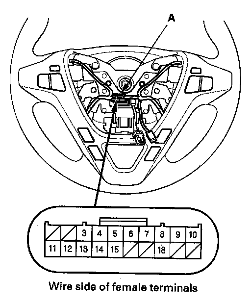
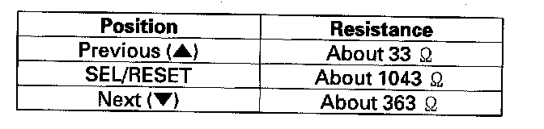

Driver/Vehicle Information Display: Service and Repair
Multi-information Switch Test/Replacement1. Remove the driver's airbag assembly.

2. Disconnect the 20P connector (A) from the cable reel.

3. Measure the resistance between the cable reel 20P connector No. 13 and No. 14 terminals in each multi-information switch position according to the table.
4. If the resistance is not as specified, replace the steering switch assembly.
NOTE: If the switch is OK, but there is a problem with the switch function, check the cable reel.